Cours 7#
Objectifs du cours#
Coder pas à pas : lancer le code à chaque étape
Discrétiser un domaine 2D, représenter un champ par une matrice
Modéliser un problème de diffusion en 2D
Discrétiser les équations en 2D
Implémenter la diffusion 2D en Python
Conditions aux bords de Dirichlet
Conditions de stabilité
Coder pas à pas#
Quelques lignes → ▶ Run → vérifier → continuer
Une erreur se voit tout de suite, là où on vient d’écrire
✗ Tout écrire puis lancer : des erreurs mélangées, introuvables
→ Exemple : une tache de colorant dans un canal, en 8 étapes
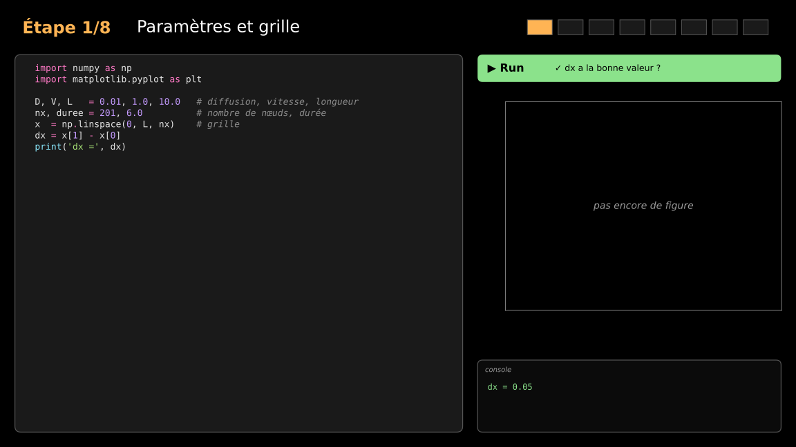
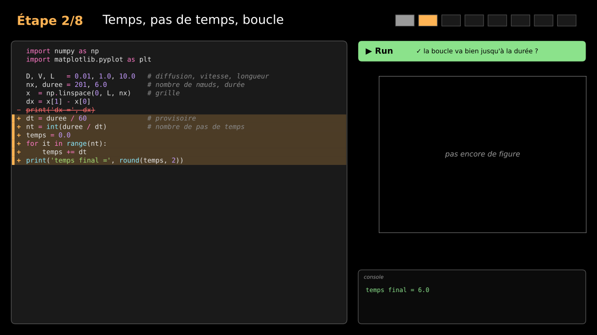
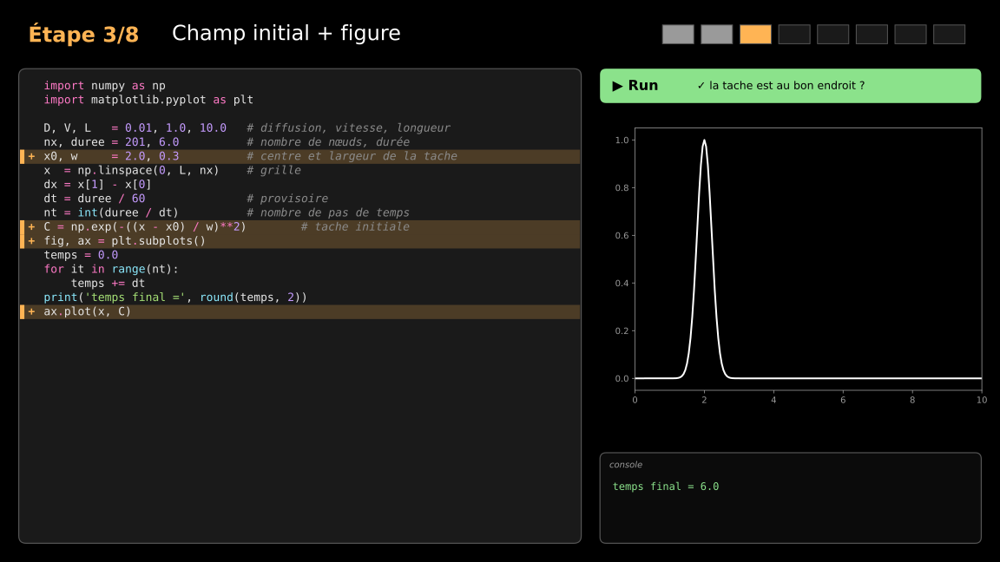
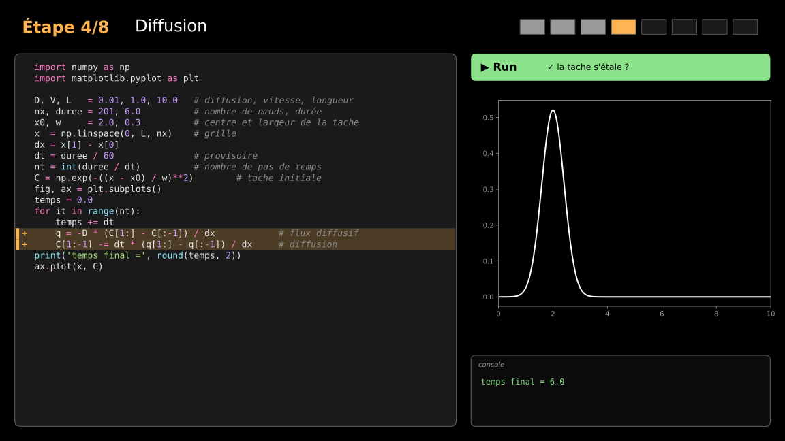
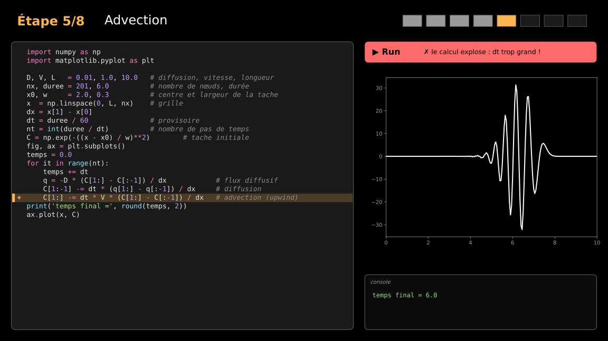
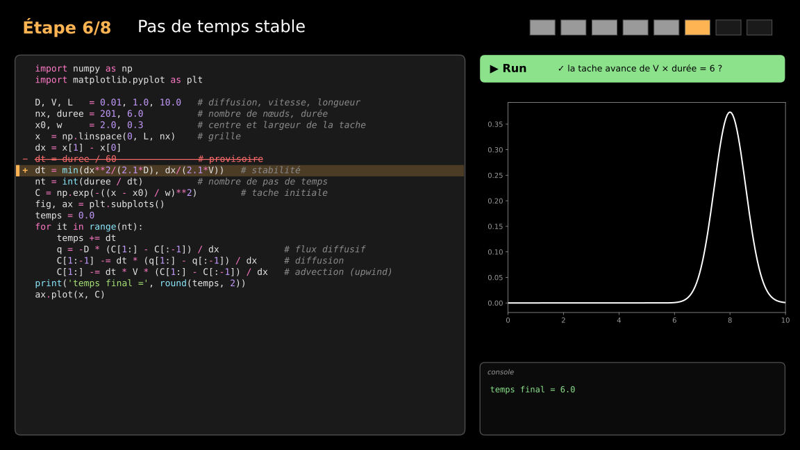
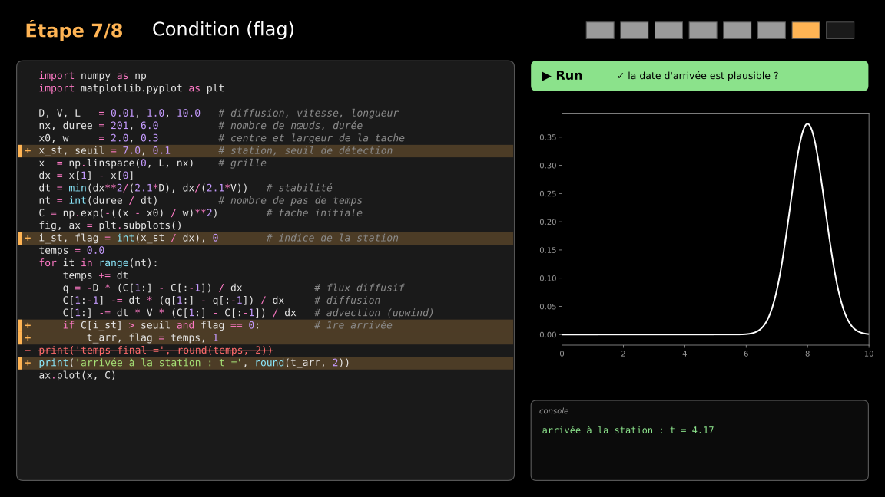
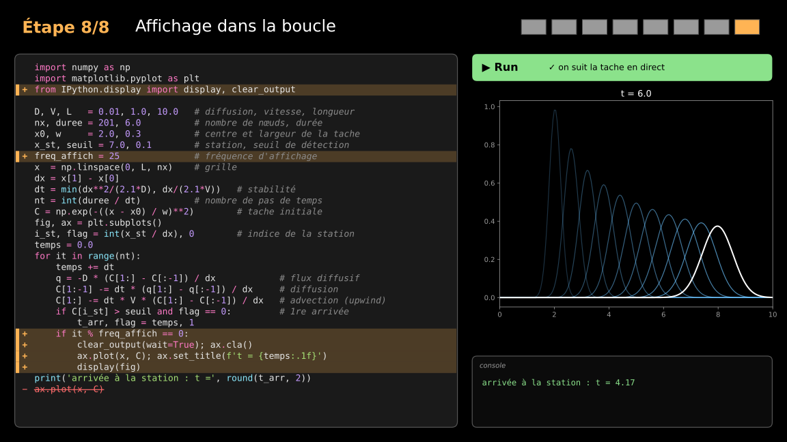
Pourquoi modéliser en 2D ?#
Exemple |
Champ |
Nœuds (\(n = 100\) par direction) |
|
|---|---|---|---|
1D |
une rivière |
vecteur |
\(100\) |
2D |
un polluant dans un lac |
matrice |
\(10\,000\) |
3D |
le lac avec sa profondeur |
tableau |
\(1\,000\,000\) |
→ Une dimension de plus : plus réaliste, mais plus de mémoire et de calcul. → On choisit la plus petite dimension qui décrit le phénomène.
Discrétisation d’un domaine rectangulaire#
Domaine \([0,L_x] \times [0,L_y]\), discrétisé comme en 1D, dans chaque direction :
dx = Lx / (nx - 1) # pas d'espace en x
dy = Ly / (ny - 1) # pas d'espace en y
x = np.linspace(0, Lx, nx) # vecteur coordonnées en x
y = np.linspace(0, Ly, ny) # vecteur coordonnées en y
T = np.ones((ny,nx)) * Tinit # initialisation d'une temperature constante
Grille 2D : nœuds et intervalles#
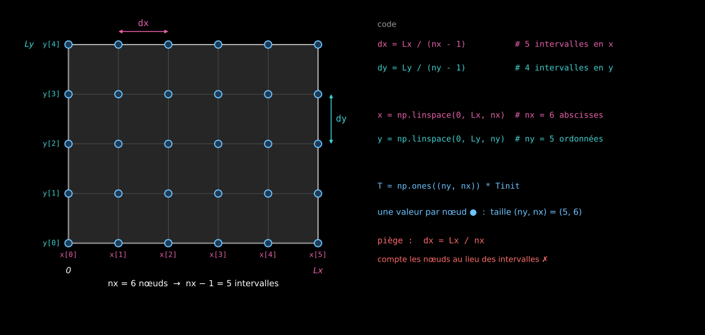
Matrice représentant un champ 2D (\(T\) ou \(C\))#
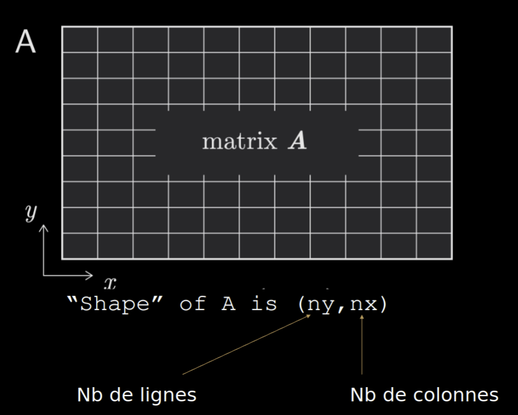
Origine : coin Sud-Ouest
Lignes ↔ axe 0 ↔ \(y\) · Colonnes ↔ axe 1 ↔ \(x\)
Matrice ou carte ? L’affichage avec imshow#
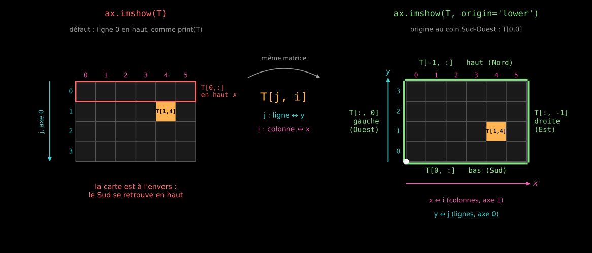
Équation de diffusion en 2D#
→ Comme en 1D, mais avec deux flux : \(q_x\) dérivé selon \(x\), \(q_y\) selon \(y\).
Approximation des dérivées partielles en 2D#
Dérivée |
Code |
Taille |
|---|---|---|
\(\partial T / \partial x\) (axe 1, colonnes) |
|
|
\(\partial T / \partial y\) (axe 0, lignes) |
|
|
→ Chaque dérivée perd un nœud dans sa direction : les deux tailles diffèrent.
Discrétisation des flux \(q_x\) et \(q_y\) : suivre les tailles#
Tableau |
Taille |
|---|---|
|
|
|
|
|
|
|
|
→ Couper la 1re et la dernière ligne de dqxdx, colonne de dqydy.
→ dTdt met à jour les nœuds intérieurs T[1:-1, 1:-1].
Illustration graphique#
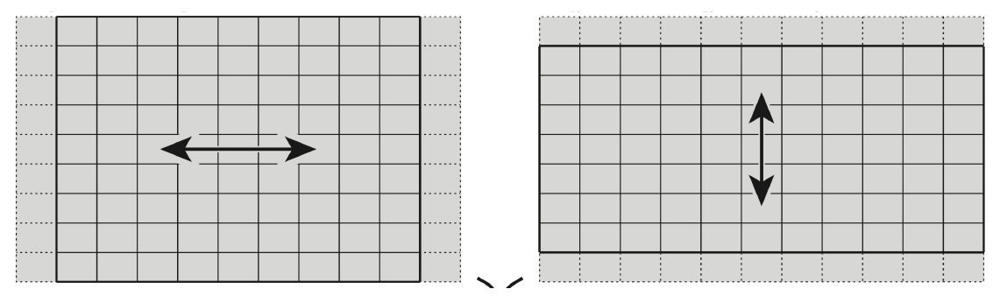
qx = -D * (A[:,1:] - A[:,:-1]) / dx qy = -D * (A[1:,:] - A[:-1,:]) / dy
dqxdx = (qx[:,1:] - qx[:,:-1]) / dx dqydy = (qy[1:,:] - qy[:-1,:]) / dy
taille (ny,nx-2) (ny-2,nx)
Troncature pour assurer la compatibilité#
qx = -D * (A[:,1:] - A[:,:-1]) / dx qy = -D * (A[1:,:] - A[:-1,:]) / dy
dqxdx = (qx[:,1:] - qx[:,:-1]) / dx dqydy = (qy[1:,:] - qy[:-1,:]) / dy
taille (ny,nx-2) (ny-2,nx)
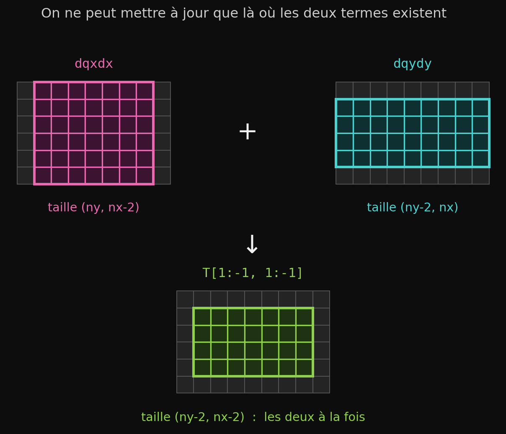
dTdt = - ( dqxdx[1:-1,:] + dqydy[:,1:-1] ) # taille (ny-2,nx-2)
A[1:-1, 1:-1] += dTdt * dt # mise à jour
Condition de stabilité#
Stable seulement si \(dt\) est assez petit. En 2D : le plus petit pas d’espace, et 4.1 au lieu de 2.1.
dt_diff = min(dx, dy)**2 / (4.1 * D) # contrainte de la diffusion 2D
dt = min(dt_max, dt_diff) # pas de temps retenu
→ Grille 2 × plus fine ⇒ \(dt\) 4 × plus petit.
Conditions aux bords de Dirichlet#
Un rectangle : quatre bords à imposer, dans la boucle, après la mise à jour.
T[0, :] = T_bas # 1er ligne
T[-1, :] = T_haut # derniere ligne
T[:, 0] = T_gauche # 1er colonne
T[:, -1] = T_droit # derniere colonne
Tracer une ligne de niveau#
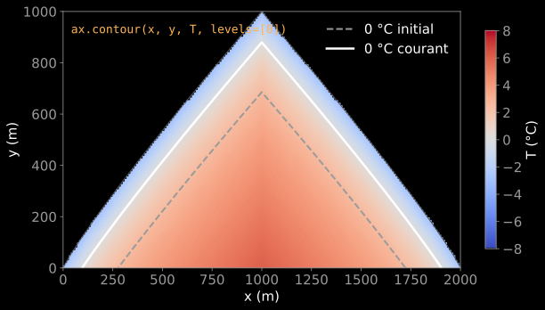
ax.contour(x, y, T, levels=[0], colors='k') # isotherme 0 °C
levelsest une liste :[0]→ une ligne,[-5, 0, 5]→ troisSuperposer deux
contour(initial / courant) → voir la limite se déplacer
La séance pratique#
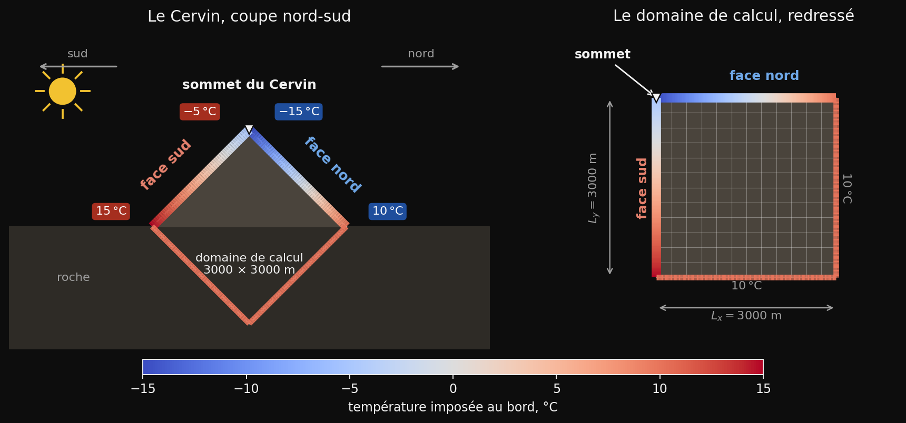
Que veut-on modéliser ? — la température à l’intérieur d’une montagne, et le recul du permafrost sous le réchauffement.
Ce qui est nouveau
le passage à la 2D : une matrice
(ny, nx)deux flux, \(q_x\) et \(q_y\), et la troncature qui les rend compatibles
\(dt_\mathrm{diff} = \min(dx,dy)^2/(4.1\,D)\), plus sévère qu’en 1D
Dirichlet sur les quatre bords
L’exercice — suivre la migration de l’isotherme \(0\,°\)C, et en déduire l’étendue des pentes qui se déstabilisent.
Le tutoriel — une figure 2D interactive, et le piège classique après ax.cla().